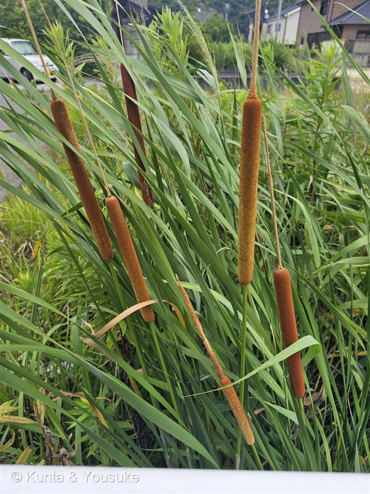
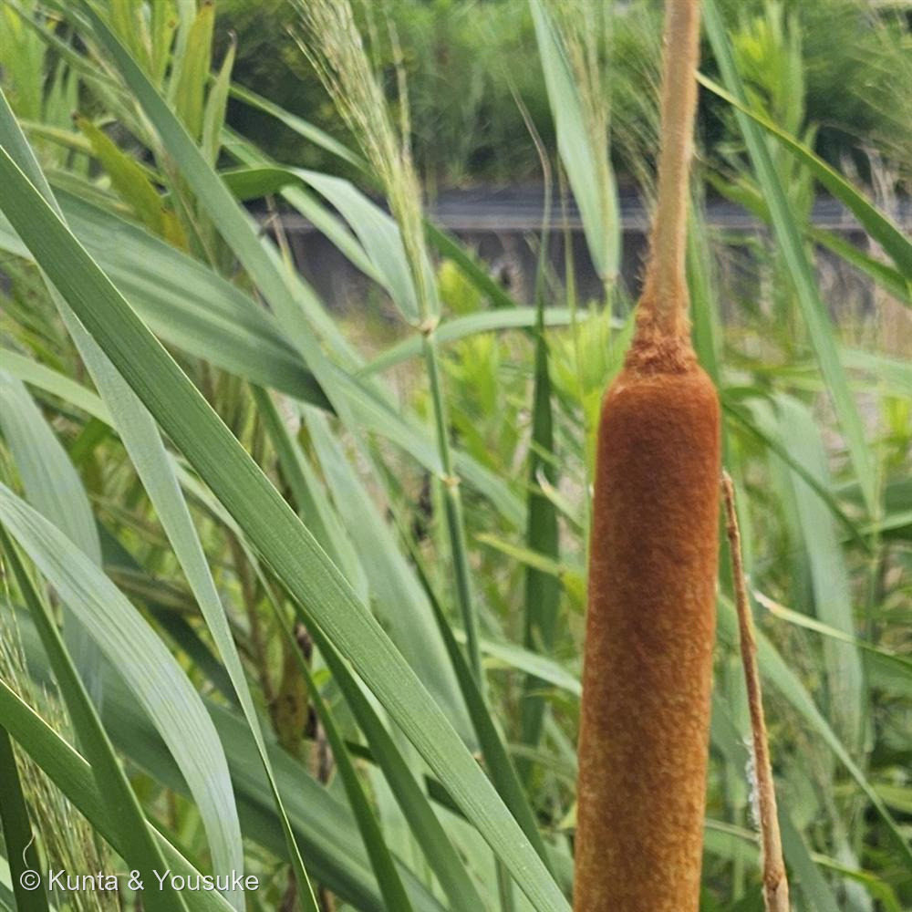

地図を読み込んでいるよ…
🔍 写真も地図も、押しているあいだ拡大して見られるよ（スマホは指を置いてすこし待ってね）。
🌍 の地図＝この子がもともと自生している場所を緑に。日本各地の池・沼・水路・湿地に生える在来の多年草。世界の温帯〜熱帯に広く分布する。今回は道路横の水辺で出会った。
日本ふくむ東アジアの水辺に自生する在来種。ほんとうは世界の温帯〜熱帯にもっと広く分布しているよ（地図には東アジアぶんだけ塗ってある）。
⚠ 地図は国（日本と中国だけ県・省）までしか塗れないから、ほんとうの分布より広く見えていることがあるよ。地図はだいたいの場所。正確なところは、上の文を見てね。
ヒメガマ（姫蒲）
Typha domingensis
原産 · 日本各地の水辺（在来）／ 世界の温帯〜熱帯に広く分布／ 花期 · 6〜8月／ ⚠茶色い穂は「種の缶づめ」＝食べ物ではない
ガマ科 · Typhaceae（ガマ属 Typha）── 図鑑で初めての科
燻太さんの見立て「おっきなフランクフルト。じゃないよ、食べたら大変なことになる。ガマだとおもうけど、沼地によく生える植物が、道路横の水辺に。」──ガマで正解。穂の「すきま」から、ヒメガマまで決まった。
名前と学名の由来 ── 「姫」の蒲
- ⭐和名「ヒメガマ（姫蒲）」の「姫」は、「小さい・ほっそりした」という意味。本家のガマより穂がほっそり細長いから「姫」がついた。「蒲（ガマ）」は、この仲間ぜんたいの古い名前。
- ⭐属名 Typha（ティファ）は、ギリシャ語の typhe＝古くからの「ガマ」の呼び名。種小名 domingensis は「サント・ドミンゴ（西インド諸島）の」＝最初に学名がつけられた土地の名前。
- ⭐あの茶色い穂は、まさに「フランクフルト／ソーセージ」そっくり（燻太さんの見立てどおり）。でも中身は……下の物語の節へ。
この植物のこと
- ガマ科ガマ属の、水辺に生える多年草。図鑑で初めてのガマ科だよ。池・沼・水路・湿地の、水につかった場所に群れて生える。今回は「沼地の植物が、道路横の水辺に生えていた」＝燻太さんの観察どおり。
- ⭐⭐あの茶色いソーセージは、ぜんぶ「雌花（めばな）の集まり」。そして、そのすぐ上（すきまのさらに上）にある細い部分が「雄花（おばな）の集まり」。ガマの仲間は、ひとつの穂に、下＝雌花・上＝雄花を分けてつける（雌雄同株・単性花）。
- 花期は6〜8月。写真（7月）は、雄花が花粉を飛ばしおえて、下の雌花が実って茶色くふくらんだ結実期。
- ⭐水をきれいにする力：ガマの仲間は、水辺の窒素やリンを吸って育つので、水質浄化に役立つ植物としても知られる。
同定について ── 決め手は「すきま」
- ガマの仲間は日本に3種（ガマ・ヒメガマ・コガマ）。まちがえやすいけど、穂の作りで見分けられる。
- ⭐⭐決め手＝雌花群と雄花群のあいだの「すきま」。ヒメガマだけ、茶色い穂（雌花）と上の雄花のあいだに、軸がむき出しの「すきま」ができる。──写真②で、茶色いソーセージの上に、細い軸がのぞいて、その先に別の穂（雄花のなごり）がある。ガマ・コガマは、この2つがくっついていて、すきまが無い。だから2種とも落とせる（里山コスモスブログ 実物比較 / 神戸市の自然 ヒメガマ・コガマ）。
- ⭐穂の形もヒント：ヒメガマは「細く長ーいソーセージ」（ガマは太いソーセージ／コガマは細く短いソーセージ）。葉の幅は5〜15mm（ガマ1〜2cm・コガマ0.5〜1cm）。──「合ってる特徴」じゃなくて、「すきまで相手を落とせた」から確かだよ。
⭐⭐⭐ 「へんてこりん」の正体 ── 種を飛ばすためのソーセージ
- 燻太さんの言葉：「種を飛ばすためとはいえ、へんてこりんだよね。」──そのとおり。あの茶色いふわふわは、ぜんぶ「種を飛ばすための仕掛け」なんだ。
- ⭐⭐茶色いソーセージの中には、何万個もの小さな種がぎっしり。ひとつひとつの種には、タンポポみたいな綿毛（パラシュート）がついている。
- ⭐⭐⭐秋〜冬、穂が熟すと、ソーセージがはじけて、中からもわもわの綿毛があふれ出す。そして、風に乗って、種を遠くまで飛ばす。──あの「フランクフルト」は、綿毛の種を、ぎゅうぎゅうに丸めて詰めこんだ「種の缶づめ」だったんだ。だから、食べたら大変（中身は種と綿毛）。燻太さんの言うとおり、これはフランクフルトじゃないよ。
- ⭐古い日本の物語にも登場：『古事記』の「因幡の白兎（いなばのしろうさぎ）」で、傷ついたうさぎがガマの穂（蒲黄＝がまの花粉）で体を癒やす。ガマの花粉は「蒲黄（ほおう）」という生薬で、昔は止血に使われた。──ソーセージに見えて、じつは薬にもなった、由緒ある草。
参考：里山コスモスブログ「ガマ・コガマ・ヒメガマの実物比較観察」（ヒメガマは雌花群と雄花群のあいだに隙間・軸が露出／ガマ・コガマは接して隙間なし／ガマは太いソーセージ・ヒメガマは細く長い・コガマは細く短い）・神戸市の自然「ヒメガマ、コガマ」（Typha domingensis・ガマ科・水辺の多年草・葉幅5〜15mm・花期6〜8月）